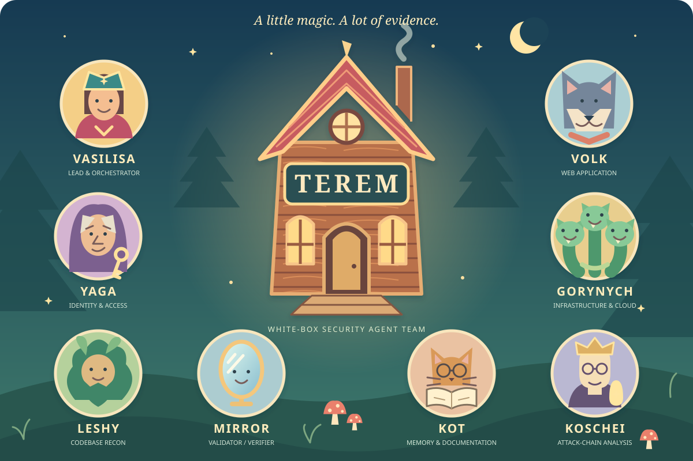
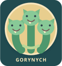

Vasilisa
Lead & orchestratorOwns scope, the initial inventory, work routing, triage, and the final report.
AI × White-box security research
Fairy-Tale Characters.
Real Security Work.
Eight AI agents go looking for trouble hiding between the lines. They trace source code, connect attack paths, and challenge findings before they reach the report.

Start where data leaves a trace
A security review can lose the thread as it moves from one vulnerability class to another. TEREM organizes the work around output sinks: HTTP responses, email, logs, generated PDFs, files, and redirects.
For each sink, the team traces data back to its sources, examines the controls along the path, and applies the relevant vulnerability classes. An email builder deserves the same scrutiny as the endpoint that calls it.
TEREM is a security-team configuration built on GitHub Squad: specialist roles, explicit handoffs, validation rules, report templates, and structural validators.
Illustrative review · email notification
Review angles: HTML injection, access control, mass assignment, and privilege boundaries. A review angle is a question to investigate, not a finding.
From source to a defensible report
Discovery, triage, chain analysis, and validation have separate owners. Candidate issues stay provisional until the evidence has been reviewed.
Vasilisa enforces Phase 0: map output sinks and inventory query parameters before discovery starts.
Specialists inspect application code, identity boundaries, infrastructure, and dependencies within the static review scope.
Vasilisa consolidates evidence and routes the candidate set for deeper analysis.
Koschei connects candidates across agents, traces each hop in source, and looks for controls that break the path.
Mirror independently applies all five validation gates to standalone candidates and complete chains.
Vasilisa assembles validated findings and manual verification steps. Kot preserves decisions, coverage, and session records.
Meet the inhabitants
The fairy-tale names give the team a personality. Source evidence and review rules govern its conclusions.
Owns scope, the initial inventory, work routing, triage, and the final report.
Hunts for injection, object access flaws, unsafe inputs, and overlooked application paths.
Reviews authentication, authorization, tokens, sessions, and trust boundaries.

Reviews cloud and container configuration, proxies, secrets, and CI/CD.
Maps the codebase, dependencies, and connections that other reviewers may overlook.
Connects candidate weaknesses into source-backed paths and checks every hop.
Challenges evidence, exploitability, severity, and mitigations through five gates.
Preserves decisions, handoffs, coverage, and the team's session history.
Mirror's Five-Gates review
Every candidate must survive an independent review. For an attack chain, the evidence must support every hop and the final impact. One effective control can break the entire chain.
“Confirmed” means the candidate passed the source-based validation process. Runtime reproduction remains a separate, manual step for the user.
Does the claim match exact file-and-line evidence on a reachable code path?
Is the sequence realistic, with explicit prerequisites and traceable state changes?
Does the demonstrated impact support the proposed severity?
Do sanitization, ownership checks, framework protections, or other controls defeat the claim?
Are the steps and prerequisites clear enough for a person to verify the issue?
What comes out of a review
TEREM analyzes an approved local copy of source code. Its workflow does not execute the target or access live environments. The user performs runtime verification separately.
The report separates findings that passed validation from observations and gaps, so a reviewer can see both the evidence and its limits.
A compatible Squad host, Python 3 for report validation, the target source code, and all 51 mapped active local checklist files from authorized sources. Checklist contents are supplied separately and are not bundled in the repository. See the README for setup requirements.
Built on GitHub Squad, © 2026 Brady Gaster and contributors (MIT). Some separately obtained local checklist references originate from SnailSploit/offensive-checklist; checklist text is not reproduced here. See TEREM's third-party notices for attribution and redistribution status.